화약류관리기사 (2003-03-16 기출문제)
1과목: 일반화약학
1. ANFO 폭약 제조 시 주성분 물질은?
- Ba(N03)2
- NH4N03
- KNO3
- K2S04
(정답률: 75%)

2. NC(니트로셀룰로오스)가 외부에 환경변화 등에 의하여 그 일부분이 자연 분해 시 생성되는 가스는?
- N2O4
- N2O
- N2O5
- NO
(정답률: 70%)
3. 폭발 후 가스 중 산화질소의 함유량을 측정하는 방법은?
- 페놀 - 설폰산법
- 몰리브덴산 암모늄법
- 게겔법
- 레만법
(정답률: 54%)
4. 니트로 셀룰로오스는 수분 또는 알콜분이 몇 퍼센트 정도 머금은 상태로 운반해야 하는가?
- 15%
- 17%
- 19%
- 23%
(정답률: 54%)
5. NG 는 98 % 이상의 글리세린에 혼산을 5 배로 니트로화 한 것으로 반응온도는 15 - 23℃ 에서 제조되는 에스테르 화합물이다. 화학식으로 옳은 것은?
- C3H5(N02)3
- C3H5(N03)3
- C3H5(N0)3
- C3H5(HN02)3
(정답률: 46%)
6. 군용 폭약으로 많이 사용하는 콤포지션-B(composition B)의 주성분은?
- RDX, TNT, wax
- Tetryl, TNT, wax
- PETN, TNT, wax
- 피크린산, TNT, wax
(정답률: 73%)
7. 약포간의 최대거리(ℓ ) 152mm, 약포의 직경(d) 38㎜ 일때의 순폭도는?
- 3
- 4
- 5
- 6
(정답률: 57%)
8. DDNP 는 뇌관의 기폭약으로 사용된다. 이 화합물은 어느 기(基)를 포함하는가?
- -O-N=C
- -C좌N
- -N=N-
- >N-S
(정답률: 50%)
9. ANFO 폭약 제조원료와 혼합무게비를 옳게 나타낸 것은?
- NH4NO3 : CH2 = 94 : 6
- NH4NO2 : C2H4 = 90 : 10
- NH3NO4 : CH4 = 85 : 15
- NH4NO3 : C2H4 = 92 : 8
(정답률: 72%)
10. 자연발화 및 자연폭발의 위험이 가장 높은 것은?
- 면화약
- 흑색화약
- 질산암모늄폭약
- ANFO 폭약
(정답률: 65%)
11. 폭약의 시험방법에 대한 설명으로 옳은 것은?
- 마찰감도 시험은 폭약의 작용 효과를 측정하는 시험이다.
- 내열시험은 폭약의 성능을 측정하는 시험이다.
- 폭속시험은 폭약의 감도를 측정하는 시험이다.
- 가열시험은 폭약의 안정도를 측정하는 시험이다.
(정답률: 62%)
12. Dautriche 검속법에 의해 폭약의 폭발속도를 시험하고자 할 때 A, B 간의 거리를 10cm,도폭선의 폭속 5,100m/sec, 연판상의 상적(傷跡)의 길이가 4.8cm 이라면 폭속은?
- 4,510 m/sec
- 5,120 m/sec
- 5,310 m/sec
- 6,520 m/sec
(정답률: 67%)
13. 탄광 갱내에 가연성 가스가 존재하면 폭약이 폭발할 때 탄광 폭발을 일으킨다. 갱내에 메탄가스의 함량이 몇 % 이상이면 폭파 작업을 해서는 안되는가?
- 메탄가스가 0.5 ∼ 1.5 % 이상이면 불가
- 1.5 ∼ 3 % 이상이면 불가
- 3 ∼ 5 % 이상이면 불가
- 5 ∼ 10 % 이상이면 불가
(정답률: 54%)
14. 뇌관의 성능을 측정하려고 할 때 사용되는 시험법은?
- 가열시험
- 정시험(nail test)
- 맹도시험
- 구포시험(mortar test)
(정답률: 78%)
15. 목분 1Kg 이 연소하면 961 ℓ 의 산소가 부족하여 산소 공급제로 KN03 를 사용하였다. 이 때 질산칼륨의 양은? (단, K:39 N:14 0:16 질산칼륨 1Kg 당 산소발생:277ℓ )
- 1.5Kg
- 3.5Kg
- 4.5Kg
- 5.5Kg
(정답률: 74%)
16. 질화연 폭분의 조성은?
- 아지화납 : 염소산칼륨 = 80% : 20%
- 아지화납 : 염소산칼륨 = 20% : 80%
- 아지화납 : 트리시네이트 = 60% : 40%
- 아지화납 : 트리시네이트 = 40% : 60%
(정답률: 27%)
17. 산소평형(oxygen balance)값이 부(-)인 것은?
- 질산암모늄
- 니트로글리세린
- 니트로글리콜
- 디니트로나프탈렌
(정답률: 75%)
18. 순폭도에 대한 설명 중 옳은 것은?
- 순폭도가 클수록 불안전 폭발한다.
- 분상계 폭약은 비중이 커지면 순폭되기 쉽다.
- 약포사이에 암분이나 탄진이 있는 경우 순폭도가 저하한다.
- 사상순폭도에 비하여 천공내(밀폐)의 순폭도가 작다.
(정답률: 62%)
19. 뇌관과 폭약포를 장축에 따라 일직선상에 놓고 뇌관의 폭굉에 의하여 폭약포와 감응 순폭하는 최대거리를 측정하는 시험은?
- 가트만 시험
- 강관시험
- 뇌관 감응시험
- 갱도시험
(정답률: 54%)
20. 혼합화약이 아닌 것은?
- 흑색화약
- 질산 암모늄 폭약
- 카알릿
- TNT
(정답률: 59%)
2과목: 발파공학
21. 다음 중 사압현상에 대해 설명이 잘못된 것은?
- 폭약이 높은 압력하에서 둔감해져서 기폭이 되지 않는 현상이다.
- 폭발속도와 충격파의 전파속도 차에 의해서 발생한다
- 장약한 공간의 거리를 충분히 유지되면 발생하지 않는다.
- 인접한 공과의 지연 시차를 짧게 하면 방지할 수 있다.
(정답률: 0%)
22. NONEL system에서는 어떠한 발파회로 결선법이 가능한가?
- 직렬 결선법만 가능하다.
- 병렬 결선법만 가능하다.
- 직병렬 결선법만 가능하다.
- 직렬, 병렬, 직병렬 결선법 모두 가능하다.
(정답률: 16%)
23. 최소 저항선을 2.4m로 하여 천공발파할 때 표준장약량은? (단, 암석계수는 1이다.)
- 10.54Kg
- 11.72Kg
- 12.04Kg
- 13.82Kg
(정답률: 19%)
24. 갱도발파에 있어 갱도의 크기가 2.0m × 2.0m 이고 공경 30㎜로 25공을 천공하여 1.4m의 굴진장으로 최소저항선이 0.45m일 때 표준발파가 실시되었다. 실제발파에서 시험발파와 장약량 조건을 동일하게 하여 1.8m × 1.8m인 갱도를 매회 1m씩 굴진코져 할 때 소요공수는? (단, 암석계수는 표준발파시 보다 경질인 0.032, 장약장은 공경의 10배 )
- 14공
- 16공
- 18공
- 20공
(정답률: 12%)
25. 발파식에 사용되는 제 계수들에 대한 설명이 가장 옳게 된 것은?
- 약량 수정계수는 최소 저항선의 길이가 클수록 적게 된다.
- 전색계수는 완전 전색인 경우 0이 된다.
- 암석계수가 큰 암석일수록 발파에 필요한 약량은 적게 된다.
- 폭약의 위력계수는 폭속에만 비례한다.
(정답률: 10%)
26. 소할발파에 있어서 복토법으로 암석을 파쇄하려고 한다. 이때 복토의 두께를 15cm정도로 할 때 필요한 장약량은? (단, 복토재질은 찰흙이고, 복토법에서의 발파계수 C는 0.15이다. 그리고 파쇄하려는 암괴의 최소 직경은 50cm이다.)
- 250g
- 375g
- 450g
- 575g
(정답률: 10%)
27. 아래 그림과 같은 발파법을 무슨 발파라고 하는가?
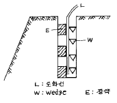
- Line blasting
- Cushion blasting
- Pre-splitting
- B.M blasting
(정답률: 29%)
28. Bench cut발파에 있어서 적당한 천공장(穿孔長)은? (단, bench의 높이는 2m, 최소저항선은 90cm라고 한다.)
- 약 1.3m
- 약 2.3m
- 약 3.3m
- 약 4.2m
(정답률: 12%)
29. 갱도 굴착에 있어서 화약에 의한 대부분의 파괴는 일반적으로 어떠한 파괴인가?
- 전단파괴
- 인장파괴
- 압축파괴
- 피로파괴
(정답률: 17%)
30. Burn-cut법에 의한 심발발파에 사용되는 폭약은 다음 중 어느 것인가?
- 비중이 크고 마찰감도가 큰 것
- 폭속이 빠르고 맹도가 큰 것
- 비중이 적고 순폭도가 큰 것
- 폭속이 느리고 추진력이 큰 것
(정답률: 13%)
31. 전기뇌관을 이용한 발파의 설명으로 옳은 것은?
- 전기뇌관의 각선의 이음부가 일부 물에 잠겨 있어도 전기뇌관은 내수성이 양호하므로 그대로 발파해도 지장이 없다.
- 다수의 장약을 직렬결선으로 제발시킬 경우 그 중 1개의 전기뇌관의 백금전교가 잘라져 있으면 그 장약 만이 불발된다.
- 단발발파는 제발발파에 비해 폭음이나 진동이 적고 또 암석의 파쇄도나 비산하는 거리도 적당하다.
- 발파모선은 피복이 완전히 절연되어 있으므로 다소의 누설전류가 있어도 상관없다.
(정답률: 8%)
32. 전기발파에서 전기뇌관의 저항이라 함은?
- 백금전교의 저항
- 모선의 저항
- 백금전교의 저항+각선의 저항
- 백금전교의 저항+모선의 저항
(정답률: 알수없음)
33. 표준발파의 장약량은 누두공의 부피에 어떤 관계로 나타나는가?
- 비례한다.
- 반비례한다.
- 제곱에 비례한다.
- 세제곱에 비례한다.
(정답률: 20%)
34. 다음 해체발파 공법 중 전도공법에 대한 설명은?
- 기술적으로 가장 간단한 공법이다.
- 주변의 여유공간이 없을 경우에 적용한다.
- 붕락시 구조물을 외측에서 내측으로 끌어당기도록 유도하는 공법이다.
- 복합 형상으로 이루어진 건물을 순간적으로 붕괴시키는 공법이다.
(정답률: 31%)
35. 굴진심도가 갱도 굴진단면에 의해서 가장 제한받는 발파법은?
- burn cut
- coromant cut
- no cut
- pyramid cut
(정답률: 16%)
36. Hauser의 발파계수 C는 다음 중 어느 것인가? (단, f(n)는 누수지수 함수, e는 폭약위력 계수, g는 암석항력 계수, d는 전색계수이다.)
- f(n)3
- e× g× f(n)2
- e× d2× g× f(n)
- e× g× d
(정답률: 17%)
37. 저항 1.5[Ω]인 전기뇌관 200개를 40개씩 5열로 직병렬 연결할 경우 뇌관의 총저항[Ω]은? (단, 기타 조건 등은 무시한다.)
- 7.5
- 12
- 60
- 300
(정답률: 9%)
38. 폭파에 의한 발파진동의 크기를 표시하는 것이 아닌 것은 ?
- 변위
- 주행수
- 속도
- 가속도
(정답률: 8%)
39. 공해진동으로서 인체에 대한 영향을 평가하는 척도로 사용되는 것은?
- 진동속도
- 진동가속도
- 진동변위
- 진동레벨
(정답률: 16%)
40. 단일공에 125g의 장약을 하여 발파한 결과 누두(漏斗)반경과 최소저항선의 비가 0.8이 되었다. 표준장약량은 약 얼마인가?
- 250g
- 225g
- 190g
- 156g
(정답률: 12%)
3과목: 암석역학
41. creep시험에서 변형률속도가 일정한 구간에 해당하는 것은?
- 1차 creep
- 2차 creep
- 3차 creep
- 4차 creep
(정답률: 6%)
42. 암석에 대한 일축압축시험에 의한 강도가 1500kg/cm2 이고, 직접인장시험에 의한 인장강도가 150kg/cm2 일 때, Mohr 파괴포락선을 직선으로 하는 경우 파괴포락선이 τ축을 자르는 전단강도는?
- 237kg/cm2
- 247kg/cm2
- 257kg/cm2
- 267kg/cm2
(정답률: 10%)
43. 길이 ℓ , 지름 d인 원주상 완전탄성체 막대기에 축방향의 인장응력 σ 를 가했을 때 축방향의 변형률 ε ℓ , 횡방향의 변형률 ε b, 지름이 줄어든 길이를 △d, poisson 비 1/ m 탄성계수 E 라 하면, 다음 중 틀린 것은?
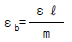
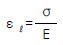
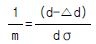
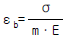
(정답률: 24%)
44. 평면응력(Plane Stress)상태의 탄성요소에 σ x, σ y, τ xy의 세응력이 작용할 때 응력과 변형률의 관계식이 틀리게 표시된 것은?
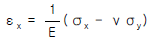
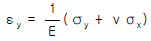
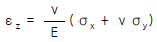
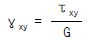
(정답률: 8%)
45. 주응력면(principal plane)상에 100Kg/cm2의 수직 응력 (normal stress)이 작용하고 있다. 이때 이 면상에 작용하는 전단응력(shear stress)의 크기는 얼마인가?
- 0 Kg/cm2
- 10 Kg/cm2
- 100 Kg/cm2
- 1000 Kg/cm2
(정답률: 20%)
46. 다음 중 암반이 지닌 결함에 속하지 않는 것은?
- 절리
- 단층
- 층리
- 취성
(정답률: 0%)
47. 무결암의 단축압축시험시 초기재하단계에서 종변형률 곡선이 비선형적으로 거동하는 이유로 가장 올바르게 설명된 것은?
- 암석내에 새로운 미세균열이 발생하기 때문이다.
- 기존의 미세균열이나 공극이 닫히기 때문이다.
- 시험편의 체적팽창이 발생하기 때문이다.
- 전단파괴면이 형성되기 때문이다.
(정답률: 7%)
48. 암석의 3축 압축상태하에 있어서 최대전단응력은?
- 최대 및 중간주응력 사이의 각을 2등분한 면상에 일어난다.
- 최소 및 중간주응력 사이의 각을 2등분한 면상에 일어난다.
- 최대 및 최소주응력 사이의 각을 2등분한 면상에 일어난다.
- 최대주응력 면상에 일어난다.
(정답률: 0%)
49. 다음 그림과 같이 응력이 작용하면 최대전단응력은? (단위: ㎏/㎝2)
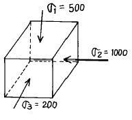
- 250㎏/㎝2
- 400㎏/㎝2
- 500㎏/㎝2
- 1250㎏/㎝2
(정답률: 0%)
50. 다음 중 암석돌출(Rock Burst) 현상이 발생되기 가장 어려운 조건은?
- 취성적 암반
- 강도가 낮은 연약한 암반
- 깊은심도
- 국부적 응력집중
(정답률: 16%)
51. 수평면과 60o의 각을 이루는 편리를 갖고 있는 편암 시험편에 대하여 삼축압축시험을 실시하였다. 편리의 점착력은 2MPa, 마찰각은 45o인 경우 시험편에 가해진 봉압이 5MPa일 때 편리를 따라 파괴를 발생시키기 위한 축응력의 크기는 약 얼마인가?
- 23MPa
- 33MPa
- 43MPa
- 53MPa
(정답률: 9%)
52. 다음중에서 일반적으로 가장 고심도에 위치하는 구조물은 ?
- 지하철
- 지열에너지 개발시설
- 원유비축기지
- 농산물 저장시설
(정답률: 7%)
53. 록볼트에 대한 설명중 맞지 않는 것은?
- 갱도의 유효단면적을 증대시킨다.
- 시공의 기계화가 가능하다.
- 주로 임시 지보로 이용된다.
- 타지보와 조합시공이 가능하다.
(정답률: 0%)
54. 암석을 등방성 균질 탄성물체라 가정할 경우, 3차원에서의 응력-변형률관계를 설명하기 위한 독립적 탄성상수의 수는 몇 개인가?
- 2
- 5
- 6
- 9
(정답률: 0%)
55. 다음의 응력-변형율 곡선에서 구한 탄성계수(E)와 포아송비(ν )로 가장 적당한 것은?
- E = 3 × 105 ㎏/㎝2, ν = 0.20
- E = 2.4 × 105 ㎏/㎝2, ν = 0.04
- E = 3 × 105 ㎏/㎝2, ν = 0.04
- E = 2.4 × 105 ㎏/㎝2, ν = 0.20
(정답률: 0%)
56. 암석의 탄성파 특성에 대해 잘못 기술된 것은?
- 밀도가 크면 속도는 증가한다.
- 공극율이 증가하면 속도는 저하한다.
- 공극이 많은 암석에서의 P파속도, S파속도는 함수상태에 관계없이 일정하다.
- 층상을 나타내는 암석에서는 층에 평행방향의 속도는 직각방향속도에 비해 빠르다.
(정답률: 15%)
57. 다음 중에서 점도의 단위는?
- Pa · s
- Pa
- Pa · m
- Pa/m
(정답률: 0%)
58. 암반 분류법중 암반의 Q값을 계산하여 터널의 지보 필요성 여부를 판단하고자 할 경우 이 Q값 계산에 포함되지 않는 항목은?
- RQD(Rock Quality Designation)
- 절리벽의 거칠기 정도
- 절리의 방향성
- 절리를 따라 흐르는 지하수 상태
(정답률: 15%)
59. 암석의 내부 마찰각을 φ , 파단각을 α 라 할 때, 옳은 관계식은?
- α = 90° + φ /2
- α = 45° + φ /2
- α = 90° - φ /2
- α = 45° - φ /2
(정답률: 12%)
60. 영률이 2× 105 kg/cm2이고, 포와송비가 0.25인 암석의 압축률은?
- 5.5× 10-6 cm2/kg
- 6.5× 10-6 cm2/kg
- 7.5× 10-6 cm2/kg
- 8.5× 10-6 cm2/kg
(정답률: 17%)
4과목: 화약류 안전관리 관계 법규
61. 동일차량에 함께 실을 수 있는 화약류 모음으로 적합한 것은?
- 폭약, 신관, 도폭선, 실탄 및 공포탄
- 포경용 신관, 폭약, 뇌관, 실탄 및 공포탄
- 도폭선, 폭약, 특별용기에 넣은 뇌관, 실탄 및 공포탄
- 꽃불류, 화약, 도폭선, 실탄 및 공포탄
(정답률: 9%)
62. 도폭선을 폐기처리 하고자 할 때 가장 올바른 방법은?
- 연소처리 한다.
- 습윤상태로 분해처리 한다.
- 전기뇌관으로 폭발처리 한다.
- 소량씩 땅속에 매몰한다.
(정답률: 16%)
63. 지상 1급 저장소의 덧문에는 얼마 이상의 두께의 철판으로 보강하여야 하는가?
- 1㎜ 이상
- 2㎜ 이상
- 3㎜ 이상
- 4㎜ 이상
(정답률: 0%)
64. 다음은 화약류와 관련된 관계법에 대한 내용을 서술한 것이다. 틀린 항목은?
- 화약류를 수입한 사람은 지체없이 행정자치부령이 정하는 바에 의하여 수입지를 관할하는 경찰서장에게 신고하여야 한다.
- 화공품을 수출 또는 수입하고자 하는 사람은 행정자치부령이 정하는 바에 의하여 그때마다 경찰청장의 허가를 받아야 한다.
- 화약류의 제조업을 영위하고자 하는 사람은 제조소마다 행정자치부령이 정하는 바에 의하여 경찰청장의 허가를 받아야 한다.
- 화약류 판매업을 영위하고자 하는 사람은 판매소마다 행정자치부령이 정하는 바에 의하여 판매소의 소재지를 관할하는 지방경찰청장의 허가를 받아야 한다.
(정답률: 알수없음)
65. 화약류 판매업자가 보관하는 화약류 양도,양수 명세부의 보존 기간으로서 옳은 것은?
- 기입을 완료한 날로부터 5년
- 기입을 완료한 날로부터 4년
- 기입을 완료한 날로부터 3년
- 기입을 완료한 날로부터 2년
(정답률: 10%)
66. 영화 또는 연극의 효과를 위하여 1일 동일한 장소에서 꽃 불류 사용허가를 받지 아니하고 사용하는 사람으로서 사용할 수 있는 수량은 ? (단, 쏘아 올리는 꽃불류 제외)
- 원료화약 30g미만의 꽃불류 50개이하
- 원료화약 50g이하의 꽃불류 10개이하
- 폭약 15g미만의 꽃불류 50개이하
- 폭약 50g미만의 꽃불류 7개이하
(정답률: 0%)
67. 피뢰침 및 가공지선의 각 부분은 피보호건물로부터 몇 m 이상의 거리를 두어야 하는가? (단, 규칙상 최소거리 이상임)
- 4.5m
- 1.5m
- 3.5m
- 2.5m
(정답률: 20%)
68. 꽃불류의 사용허가신청 서류와 거리가 먼 것은?
- 사용순서 대장
- 사용책임자 및 작업자의 성명
- 제조소명
- 사용계획서
(정답률: 6%)
69. 일시적인 토목공사를 하거나 일정한 기간의 공사를 하는 사람이 그 공사에 사용하기 위하여 화약류를 저장하고자 하는 때에 설치할 수 있는 화약류저장소는?
- 1급 화약류 저장소
- 2급 화약류 저장소
- 3급 화약류 저장소
- 간이 화약류 저장소
(정답률: 9%)
70. 공인된 기관이 물리, 화학상의 실험용으로 도폭선을 사용할 때 1회의 사용량은?
- 700m 이하
- 300m 이하
- 400m 이하
- 200m 이하
(정답률: 16%)
71. 화약류 저장소의 설치허가 신청을 할 때 저장소 부근의 약도를 첨부하여야 하는데 그 약도로 적당한 것은?
- 사방 200m 이내
- 사방 300m 이내
- 사방 400m 이내
- 사방 500m 이내
(정답률: 34%)
72. 꽃불류 저장소에 저장 하여서는 아니되는 화약류는?
- 미진동 파쇄기
- 장난감용 꽃불류
- 신호염관
- 전기 도화선
(정답률: 0%)
73. 초유폭약에 의한 발파 기술상의 기준 설명중 올바르지 않은 것은?
- 장전후에는 가급적 신속히 점화할 것
- 가연성 가스가 0.5% 이상이 되는 장소에서는 발파를 하지 말 것
- 뇌관이 달린 폭약은 장전용 호스로 조심스럽게 장전 할 것
- 불발된 천공된 구멍으로부터 초유폭약 또는 메지등을 제거하는 때에는 압축공기를 사용하지 말 것
(정답률: 8%)
74. 수중저장소에 화약류를 저장하는 경우 저장방법 및 취급방법 중 가장 거리가 먼 것은?
- 가루로된 화약류는 15퍼센트 정도의 물기를 머금게 한 후 물이 스며들 수 없게 포장을 하여 나무상자에 넣을 것
- 덩어리화약류는 물에 항상 잠긴 상태로 저장할 것
- 화약류는 수면으로 부터 50센티미터 이상의 물속에 저장할 것
- 저장소 내부는 환기에 유의하고 무연화약 또는 다이너마이트를 저장하는 경우에는 온도계를 장치할 것
(정답률: 8%)
75. 질산에스텔 및 그 성분이 들어있는 화약 또는 폭약으로서 제조일로부터 2년이 된 것은 그 때로 부터 어떻게 하여야 하는가?
- 2년 마다 유리산시험
- 매년 유리산시험
- 6월 마다 내열시험
- 3월 마다 내열시험
(정답률: 19%)
76. 판매업자가 판매할 목적으로 화약류 양수 허가를 받지 아니한 사람에게 제품을 양도했을 경우의 행정처분기준은? (단, 위반회수는 3회로 한다.)
- 1월 효력정지
- 3월 효력정지
- 6월 효력정지
- 허가취소
(정답률: 14%)
77. 화약류 판매업자 결격사유에 해당되는 경우는?
- 기소유예 판결을 받은 사람
- 금고이상의 형에 대한 집행유예선고를 선고받고 집행 유예기간이 끝난 후 1년6개월이 경과한 사람
- 20세의 여자
- 사업을 개시한 후 정당한 사유 없이 1년이상 휴업의 사유로 허가취소처분을 받고 2년이 경과한 사람
(정답률: 15%)
78. 화약류 소유자에게 안정도시험을 명령할 수 있는 자는?
- 경찰서장
- 경찰청장
- 행정자치부장관
- 검찰총장
(정답률: 19%)
79. 총포· 도검· 화약류 등 단속법 제71조 규정의 5년 이하의 징역 또는 1천만원 이하의 벌금형으로 처벌받아야 하는 경우가 아닌 것은?
- 화기 취급 및 흡연의 금지 등을 위반한 사람
- 화약류의 발파 또는 연소시 사용허가를 받지 아니한 사람
- 화약류의 양수 또는 양도 허가 없이 주고 받은 사람
- 안전상의 감독업무를 게을리 한 화약류 관리보안 책임자
(정답률: 0%)
80. 니트로 글리세린을 분해 시키는데 가장 거리가 먼 것은?(단, 혼합액체로 만드는데 필요하지 않는 것)
- 식물유제
- 알콜
- 가성소다
- 물
(정답률: 8%)
5과목: 굴착공학
81. 터널공사에서는 터널의 안정성을 확보하기 위해서 여러가지 보조공법을 사용하게 된다. 다음 중 막장의 천반을 안정화시키기 위해서 사용되는 보조공법이 아닌 것은?
- forepoling 공법
- mini pipe roof 공법
- sheet pile 공법
- pressure wire 공법
(정답률: 9%)
82. 흙을 통한 유체의 유동에 영향을 미치는 요인을 설명한 것으로 옳지 않은 것은?
- 유체의 유동이 발생하는 두 지점간의 압력 차
- 유체의 밀도와 점도
- 간극의 크기 및 형상
- 지하수면으로부터의 심도
(정답률: 0%)
83. 다음 중에서 절리의 전단강성(shear stiffness)의 단위는 ?
- MPa
- MPa/m
- MPa/m2
- MPa· m
(정답률: 10%)
84. 수갱을 굴착한 후 복공을 하기 위한 라이닝 두께 설계시 고려하지 않아도 되는 요소는?
- 콘크리트 비중
- 수갱의 측압
- 콘크리트 압축강도
- 모암의 포아송비
(정답률: 10%)
85. 다음 중 암반의 초기지압의 측정방법이 아닌 것은?
- overcoring법
- AE법
- 수압파쇄법
- 응력보상법
(정답률: 7%)
86. 원지반의 거동을 평가하기 위한 계측 항목 중 틀린 것은?
- 지중변위
- Rock bolt 축력 측정
- 내공변위
- 지표면 침하
(정답률: 0%)
87. 암반의 내하성 및 투수성을 지배하는 요소가 아닌 것은?
- 암석의 고결도
- 암반의 등급구분
- 풍화정도
- 틈 분포성상
(정답률: 8%)
88. 급경사의 주상절리가 발달한 암반사면에 발생하는 파괴 형태는?
- 전도파괴
- 평면절리파괴
- 원호파괴
- 쐐기파괴
(정답률: 알수없음)
89. 암반사면안정해석시 일차적인 예비평가단계에서 사용되는 해석법은?
- 한계평형해석법
- 평사투영법
- 탄성해석법
- 탄소성해석법
(정답률: 알수없음)
90. 어떤 암석을 단축압축 시험한 결과 다음 그림과 같은 응력-변형률 커브(stress-strain curve)를 얻었다. 이 암석의 할선 영률(secant Young's modulus)을 나타내는 직선의 기울기는?
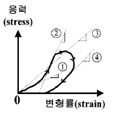
- ①
- ②
- ③
- ④
(정답률: 0%)
91. 수평방향의 응력 2.4 ton/m2와 수직방향의 응력 4 ton/m2가 작용하는 암반내에 반경 4 m의 원형터널을 굴착하였다. 수평방향의 벽면으로부터 2 m되는 지점의 반경방향의 응력은 얼마인가?
- 1.926 t/m2
- 1.630 t/m2
- 2.370 t/m2
- 1.185 t/m2
(정답률: 0%)
92. 점착력(c)가 1t/m2이고 내부마찰각(Φ )이 30° 인 지반의 한 점에서의 초기응력이 σ 1=2t/m2, σ 3=1t/m2이다. 저수지의 건설로 공극수압(pore water pressure, Pw)이 증가 될 때 파괴를 일으키기 위해 요구되는 공극수압은? (단, 파괴는 peak stress에서 발생한다고 가정한다.)
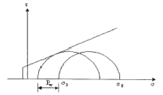
- 2.23t/m2
- 2.73t/m2
- 3.23t/m2
- 3.73t/m2
(정답률: 17%)
93. 다음은 터널 방수공사에 대한 설명이다. 틀린 것은?
- 타설 이음매 지수공법에는 접착형지수판, 표면형지수판, 매설형지수판 등이 있다.
- 복공완료후의 타설 이음매나 균열로부터의 누수에 대하여 도수(導水)공법이나 지수주입 공법이 사용된다.
- 시트방식에는 일종 플랫시트방식, 일종 콜케이트방식, 2종 시트방식이 있다.
- 방수공은 크게 면상 방수공과 구상 방수공으로 대별 할 수 있다.
(정답률: 8%)
94. 다음 중에서 상대적인 크기를 맞게 나타낸 것은?
- 주동토압 ＜ 정지토압 ＜ 수동토압
- 주동토압 ＜ 수동토압 ＜ 정지토압
- 수동토압 ＜ 정지토압 ＜ 주동토압
- 수동토압 ＜ 주동토압 ＜ 정지토압
(정답률: 0%)
95. 포화점토의 일축압축강도가 80kPa인 경우 비배수 전단강도는 얼마인가?
- 20kPa
- 40kPa
- 60kPa
- 80kPa
(정답률: 0%)
96. 다음 그림과 같이 견고한 층리 또는 편리를 갖는 암반지반에 터널을 굴착하고자 한다. 테르자기(Terzaghi)의 터널 암하중개념에 의하면 터널이 받는 하중은 얼마인가?
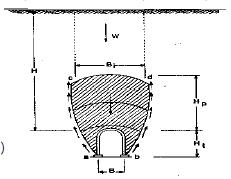
- 0
- 0 ∼ 0.5 B
- 0 ∼ 0.25 B
- 1.1 (B ＋ Ht)
(정답률: 9%)
97. 그림과 같은 지반에서 모관수에 의해 지표면까지 완전히 포화되어 있다고 가정할 때 -3.0m에서의 유효응력은?
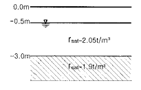
- 1.65t/m2
- 2.65t/m2
- 3.65t/m2
- 4.65t/m2
(정답률: 0%)
98. 다음 중 암반분류법인 RMR 분류에서 조사항목이 아닌 것은?
- 암석의 강도
- 불연속면의 간격
- RQD
- 탄성파 속도
(정답률: 19%)
99. 지하공동의 안정에 영향을 미치는 요인이 아닌 것은?
- 공동 상호간의 거리
- 공동의 크기
- 공동의 방향
- 공동의 형상
(정답률: 0%)
100. 흙막이 공법의 시공순서가 바르게 표시된 것은?
- 엄지말뚝시공 → 지반굴착 → 수평널시공 → 지지체시공
- 엄지말뚝시공 → 수평널시공 → 지반굴찰 → 지지체시공
- 지반굴착 → 엄지말뚝시공 → 수평널시공 → 지지체시공
- 지반굴착 → 수평널시공 → 지반굴착 → 지지체시공
(정답률: 8%)